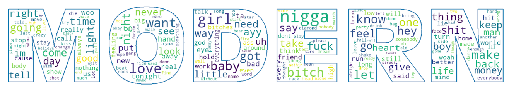
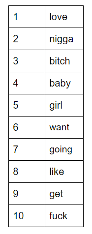
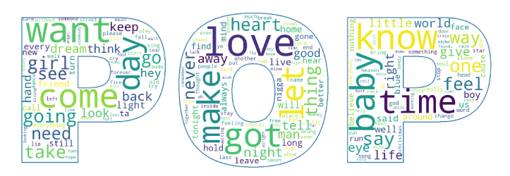
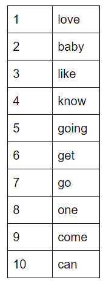
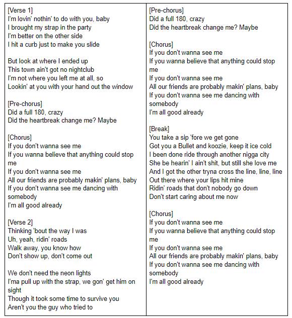

The lyrics
To finish our recipe, we need to find out the most generic lyrics, according to the hit songs of the last decade. To accomplish this, we obtained a 8,7 Mo text file with all the lyrics of the songs gathered on billboard.
Wordcloud
We determined the most common words in these lyrics (using a TF-IDF calculation), after removing the common english stopwords. We displayed the results as a wordcloud.
Here is the top 10 list of the most common words in these lyrics:
The most surprising words are “nigga”, “bitch” and “fuck”, which appear to be very common in modern rap and hip hop songs that made their way to the Billboard 100. We expect to see them appear in the generic verses that we will see further in this study. To compare how modern music lyrics are different from older songs, we downloaded a dataset of 57650 pop songs lyrics, and ran the same analysis on them. The following wordcloud was obtained.
The top 10 most common words are, this time:
If we dive deeper in the results of the TF-IDF, it is interesting to highlight words that have a much higher importance in modern hit songs than in other pop songs:
- “nigga” is 179th for pop songs, 2nd for modern hit songs
- “bitch” is 320th for pop songs, 3rd for modern hit songs
- “shit” is 198th for pop songs, 15th for modern hit songs
- “money” is 125th for pop songs, 31st for modern hit songs
And on the other hand:
- “heart” is 21st for pop songs, 57th for modern hit songs
- “alone” is 83rd for pop songs, 160th for modern hit songs
- “lord” is 93rd for pop songs, 181st for modern hit songs
- “inside” is 100th for pop songs, 241st for modern hit songs
Sentiment analysis
We estimated how happy the modern hit songs are, and compared them to the happiness score of the classic pop songs dataset. We obtained the following:

Modern hit songs are not very different from classic pop songs concerning sentiment, although they appear to be slightly “less happy” on average. We do observe as well that neither of our datasets include “very happy” or “very sad” songs.
Generate the lyrics
To get the most generic lyrics possible, we then extracted the “most generic verses” from the songs. These verses are the ones that contain the most common words on average, and at least 5 words (common stopwords excluded). To finish, we arranged 33 verses out of the 65 most generic ones, in order to create a generic song with rhymes.
Interesting fact: After arranging these lyrics, we discovered that 12 of the 33 verses selected come from the same song: Don’t Start Now, by Dua Lipa, a song that recently hits the Billboard. Nearly half of the verses of the songs are in the 50 most generic verses, as established by our study. Could Dua Lipa have found about the recipe for popular songs just before us?